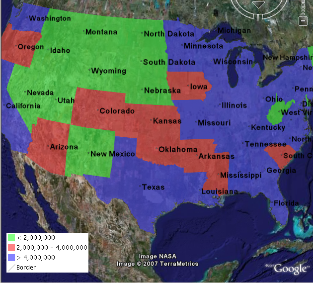

KML Legends¶
WMS는 WMS 클라이언트가 서버에서 특정 레이어에 대한 범례 그래픽을 얻어올 수 있는 GetLegendGraphic 작업을 지원합니다. 이 범례를 KML 오버레이와 결합하면 Google 어스에서 범례를 볼 수 있습니다.
GeoServer가 KML 산출물에 범례를 포함하게 하려면 KML 반영자 요청에 다음과 같이 legend=true 파라미터를 추가하십시오.
http://localhost:8080/geoserver/wms/kml?layers=topp:states&legend=true
이 요청으로 Google 어스가 다음과 같이 범례를 표출할 것입니다.

다음: Filters